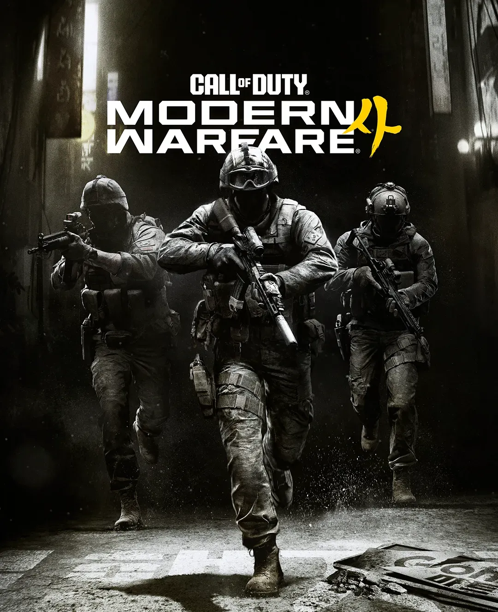
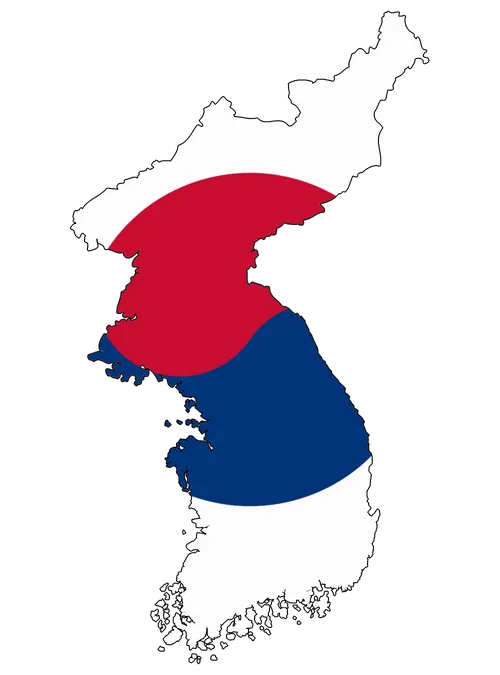

캠페인이 짧은거 빼면 다 좋은데... 결말이 아쉬운게 뭐냐면....

결말이 '북진통일'이 아니라서 조금 아쉬움 ㄹㅇ....

캠페인이 짧은거 빼면 다 좋은데... 결말이 아쉬운게 뭐냐면....

결말이 '북진통일'이 아니라서 조금 아쉬움 ㄹㅇ....
사리원에 북쪽에 4개 사단 전부다 본부도 안깔고 화상회의로 여단장끼리 누가 먼저 드가나 드잡이질하고 있을듯
내가...! 내가 먼저 평양 입성할거야..!
평양 최초 입성은 전통을 계승한다는 의미에서 1사단 12여단이 해야한다고 생각합니다
전통은 깨라고 있는거라고ㅋㅋ
최고 지도자 목 딴 상태라 중국,러시아 개입 없으면 통일했을듯ㅋㅋㅋ
이후 스토리는 dmz모드에서 풀예정
Dlc로 팔아야지
DLC로 중,러 참전으로 스토리 풀기
김정은 참수작전하는데 결말이 북진통일이 아니라고?
스포이긴 한데
영화 강철비 생각하면 됨
반란세력하고 싸움 한거라
참수작전도 뭔가 북진통일 태극기 꽂는 느낌이기보단
한미연합군이 북한 사건터진거 뒷수습해주는 느낌이었음
파트2를 위한 아껴두기가 아닐까
국지전만 표현하고 포방부도 없는 전면전 총력전이 없는게 말이되나
생각해보니 참수작전은 1티어 특수부대나 하는 거 아니냐 현준이는 대체....
중동에 납치된 소년병 출신인데.델타포스 출신의 용병 밑에서 배웠다는거 아니면 말이 안됨
사가라 소스케 군조!
이걸 아직도 기억하는 틀니 딱딱충이 있을 줄이야
"박현준, 탱크 무력화 해"
북진통일 스토리로 가면
나중에 북한 스토리 못 우려먹잖어 ㅋㅋ
더 인터뷰 되고싶으면 해도될걸ㅋㅋㅋ
훨씬 나은 결말이지. 직전까지 서로 쏴죽여댔는데 이겼다고 북진통일하면 싹 포로인건데 그거 어떻게 먹여살리냐
아ㅋㅋ 사서 해볼까
2 스토리에서 존나 크게 데인다음 3와 블옵 67 스킵했는데 이건 평보고 구매함
개씨발 리붓 모던2 스토리 개씨발 내가 그거 보고 3은 평보고 사려고 했는데 평 개좆이어서 돈 굳었음. 블옵은 나온지도 모르게 사라짐
일단 하진시자체가 러시아 - 북한 - 한국의 접경지역이고 탱크가 왕래할 수 있는 땅굴을 팔만큼 단단하되 현무암보다는 약한 지반이여야되고. 방공망에만 기능하는 타겟형 EMP (휴대형)도 존재하는세계라서 충분했다고봄
난 주인공 빼고 김이박이 없어서 좀 이상하던데
콜옵은 싱글 스토리 이후 이야기를 멀티에서 풀기 때문에 그럼 이제 북한의 또 다른 제 2의 인물이 나와서 전쟁을 계속 하는 이야기일거임
블랙옵스 위주라서ㅋㅋ 본대는 7군단 선봉에 세워서 북진중일껄?